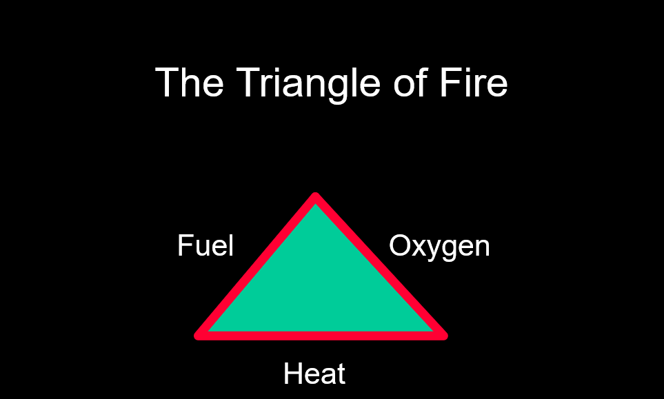
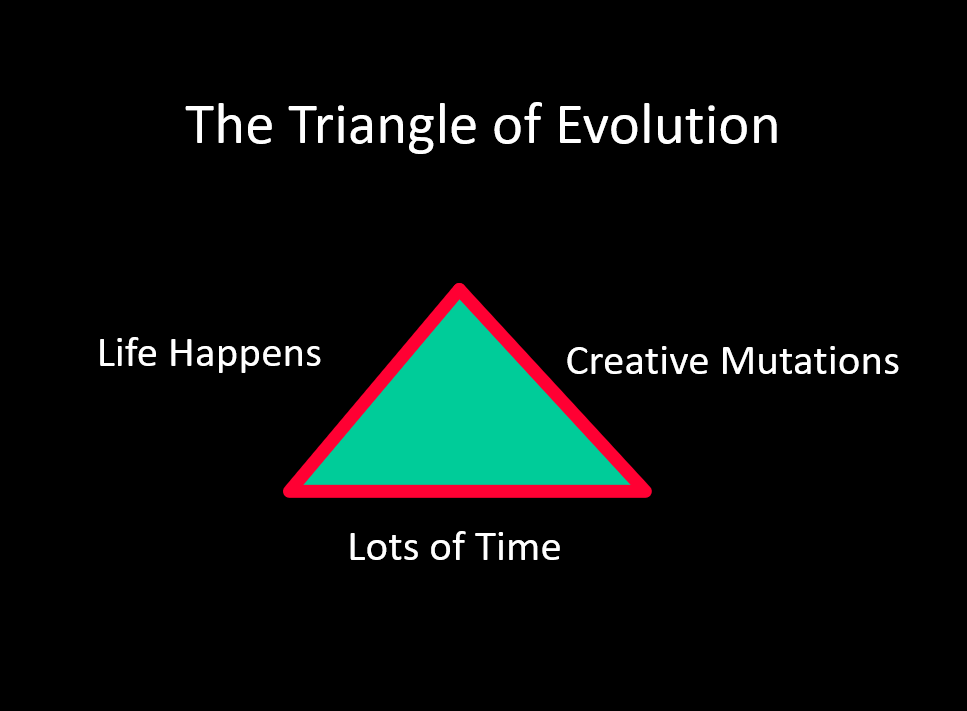

| Feature Article - October 1996 |
| by Do-While Jones |
Fire requires three conditions. There must be fuel, oxygen, and adequate heat for the reaction to continue. If any one of these conditions does not exist, the fire goes out. You can extinguish a fire by removing the fuel, by removing the source of oxygen, or by cooling the fuel below the ignition temperature.
 |
|---|
The theory of evolution depends upon three conjectures. All of these three conjectures must be true for evolution to be true. If any one of these conjectures is false, then life could not have evolved.
 |
|---|
The first conjecture is that dead things can come to life all by themselves. This was commonly believed before Louis Pasteur proved it to be false. Today this foolish notion is universally rejected by scientists, but it still remains the foundation of the theory of evolution.
The theory of evolution says that in the beginning there was no life. There was just a primeval soup of simple chemicals that joined together by chance to form twenty different kinds of amino acids. These amino acids randomly joined to form four different kinds of proteins [correction: that should be bases, not proteins], which just happened to turn themselves into complicated DNA and RNA molecules, which spontaneously became a nucleus surrounded by cytoplasm and a membrane that made up a dead cell, which somehow sprang to life and decided to reproduce itself.
Is there any scientific evidence that disordered molecules will naturally organize themselves into life forms? Absolutely not. The second law of thermodynamics says we should not expect this to happen. Despite this, scientists have tried valiantly to show that under some conditions this will happen.
Evolutionists point to Dr. Stanley Miller's experiments in 1952, in which he finally, under carefully controlled conditions, managed to produce eight of the twenty amino acids necessary to build proteins. Evolutionists see this as proof that eight of twenty amino acids can form spontaneously. But isn't it more accurate to say that this experiment proved that it is impossible to create twelve of the necessary amino acids no matter how hard you try? Furthermore, there is no reason to believe the conditions in Dr. Miller's experiments resemble conditions that have ever existed on earth.
Scientists are continuing his research, trying to make proteins, RNA, and DNA molecules happen spontaneously out of all twenty amino acids. As hard as they try, they only meet with partial success. This just goes to show it is impossible that a complete cell can form by chance.
But suppose that someday, someone does force a complete cell to form. All they will have is Dr. Frankenstein's dead monster lying on the slab. They still have to inject life into it.
It has often been observed that living things turn into dead things spontaneously. It is even possible to create conditions that will cause living things to die within moments. If you put butterflies in a jar of carbon tetrachloride, they quickly make the transition from living specimens to dead specimens. You cannot, however, put dead butterflies in a jar of pure oxygen and bring them to life.
Pinocchio and Frosty the Snowman are fictional stories. Wooden puppets and snowmen don't spontaneously come to life. Why do people keep trying to prove that dead chemicals can come to life all by themselves? With the possible exception of attempts to turn lead into gold, no other experiment has been tried so often and failed so miserably. Alchemists kept trying to turn lead into gold because they wanted desperately to believe it was possible. Evolutionists desperately want to believe that you can turn death into life. But all the scientific evidence indicates that it just can't be done. The belief that death spontaneously gives birth to life is wishful thinking, not scientific fact.
The second evolutionary conjecture is that mutations are good. Evolutionists believe that lower forms of life had mutant children that were more fit for survival, and became dominant.
If Charles Darwin had read Gregor Mendel's 1866 paper describing the results of his experiments with peas, he might not have come to the conclusion he did. But the importance of Mendel's work wasn't recognized until 1900. Today we know much more about heredity than even Mendel did, and have put this knowledge to practical use breeding horses, dogs, and pigeons.
Pigeons are a good example. There are people who know how to breed pigeons to obtain unusual colored feathers. Have you ever heard of anyone breeding a pigeon into an ostrich? Or even into a robin? No. You can breed pigeons for generations and all you ever get are pigeons. Pigeons with unusual colored feathers, perhaps, but they are still pigeons.
If these pigeons are allowed to breed indiscriminately, the offspring quickly revert to normal colors. That is because they obtain these usual colors by mating birds which lack dominant genes that would suppress the desired color. The desired effect comes from the removal of existing genes from the gene pool. Selective breeding does not add new genes. It simply produces a subspecies that lacks the variety of characteristics in the parent species.
What about crossbreeding? Can you create new species by crossbreeding? You no doubt have heard countless jokes like this one: "What do you get when you cross a monkey with an alligator?" You don't get anything because you can't cross a monkey with an alligator. The chromosomes don't match. The egg won't fertilize.
There are only a few species that can mate with other closely related species. You can cross a horse with a donkey to get a mule. But you have to keep doing it because the male mules are sterile. Crossbreeding does not create new species that can perpetuate themselves.
You can breed one kind of dog with a different kind of dog, and you'll get a mutt, but it is still a dog. That isn't really crossbreeding because all dogs are the same species. They have different characteristics, but they are all dogs.
What about mutations? Scientists have bombarded fruit flies with X-rays to try to get them to mutate, and it works. They get mutant fruit flies without wings, fruit files without eyes, and lots of fruit flies that die quickly. But they have never produced a dragonfly or a butterfly. All they get are fruit flies with birth defects.
In the late 1950's a drug called Thalidomide had the unexpected side effect of producing birth defects. You no doubt have heard terrible stories about Thalidomide babies who were born without legs, or arms, or were mentally retarded. Did you hear about the Thalidomide babies who set underwater swimming records because they were born with gills? Did you hear about the Thalidomide babies who could fly because they were born with wings? No, you didn't; because there weren't any. Modern scientific observation has shown that birth defects are overwhelmingly harmful. That's why mothers-to-be don't hope for a mutant baby. They want their babies to be normal because birth defects are bad. Birth defects don't produce superior offspring who win the battle of the survival of the fittest.
Despite all the breeding, crossbreeding, and induced mutations, nobody has ever created a new species that can reproduce itself, let alone be so superior that it can drive its parent species to extinction. There is no modern scientific evidence that species evolve into other species.
There is no fossil evidence that species have evolved in the past, either. Darwin predicted that if we examined the fossil record, we would find innumerable transitional forms. Now, 130 years and millions of fossils later, we haven't found a single one. Some rather highly specialized species appear abruptly in the Cambrian rocks. There are no fossil ancestors in the Precambrian rocks below them. There is a huge gap between the Precambrian fossil algae and these fully developed Cambrian invertebrate fossils. The fossil record simply doesn't support evolution.
You have probably heard about "the missing link." It would be much more accurate to talk about the thousands of missing links. There aren't any links (living or fossil) between any of the species. Not one has ever been found.
The newspapers occasionally report the discovery of a part of a skull and two or three teeth, scattered over several acres. These bones are claimed to be conclusive proof that a man-like creature once existed that was hairy and walked on all fours. The newspapers rarely tell you later that the claims were investigated and found to be false.
Modern experiments in genetics and the fossil record are in perfect agreement. Existing species never change into other species. Any belief that they do is not based on scientific evidence.
The third conjecture of the theory of evolution is that the earth is billions of years old. A long time is required because the theory of evolution says that, despite all the scientific evidence to the contrary, life does happen spontaneously. They say it just doesn't happen very often because it is so improbable. Evolutionists also claim that despite all the scientific evidence to the contrary, mutation of one species into another (superior) species isn't impossible, it is just very improbable. A long period of time is the only thing that can make improbable events happen.
The probability that you can flip sixteen coins and make them all come up heads is 1 in 65,536. If you try it once, you will probably fail because it isn't likely to happen. But if you try it ten million times, you will certainly succeed. In fact, you will probably succeed about 150 times. It is provably true that if you repeat a random experiment often enough any possible outcome will occur sooner or later, no matter how unlikely that outcome is.
Therefore, the only hope for evolutionists is that the spontaneous commencement of life isn't impossible, just very improbable. They must hope that good mutations aren't impossible, just improbable. Then they hope that billions of years have passed to provide enough opportunities for these things to happen. Is there any scientific evidence that indicates the world is really very old?
Evolutionists claim radioactive dating proves the Earth is old. Radioactive dating of rocks is a classic example of "garbage-in garbage-out." It is easy to program a computer to determine the age of a rock based on the ratio of radioactive isotopes found in it. Just enter the measured amount of each isotope, plus the assumed initial concentrations of each isotope, and you will get an age that depends primarily on the assumed initial concentrations. If you want the computer to tell you the rock is old, just assume a small initial value for the daughter isotope. If you want the computer to tell you the rock is young, assume a high initial value for the daughter isotope. The computer will tell you any age you want it to. There is no scientific proof that radioactive dating of rocks is accurate. When rocks of known age (obtained from volcanic eruptions that were observed in the last 200 years) are sent to the lab, they are routinely measured to be millions (or hundreds of millions) of years old.
Counting the strata in sedimentary rock was once thought to be a reliable way to determine its age. When Mount St. Helen erupted in 1980, its snow cap melted and washed material down the side of the mountain forming layers of rocks that would have been dated at thousands of years, had not scientists watched them form in a single afternoon. (It also produced lava dated at 2.8 million years old by the potassium-argon method.)
Circular reasoning is sometimes used for dating rocks. Rocks are said to be old because they contain fossils that are very old. How do we know those fossils are old? Because they are found in old rocks. (They must be old rocks, because they contain old fossils. )
There are other, more reliable ways to determine the age of the Earth. These ways tend to set the absolute maximum age of the Earth to be around 10,000 years. If these measurements are correct, then there could not possibly have been enough time for evolution to happen.
For example, the uranium in the Earth is continually decomposing into lead and helium. The helium gas gets trapped in the atmosphere. If the Earth were more than 10,000 years old, there would be much more helium in the atmosphere than there is now.
The diameter of the Sun shrinks as it burns. Therefore, the Sun must have been much larger in the past. If the rate measured by the Naval Observatory is correct and constant, then the surface of the Sun would have been touching the Earth just a few million years ago. Not only would that have made life on Earth unthinkable, Mercury and Venus would have had great difficulty maintaining their orbits.
Cosmic dust is falling on the Earth at a measurable rate. That same dust is falling on the Moon. In the late 1960's, evolutionists calculated that there would be hundreds of feet of cosmic dust on the Moon. They warned that the astronauts might get stuck in the dust. When astronauts landed on the Moon, they discovered a fraction of an inch everywhere they went. That's about the amount of dust you would expect to find on a 10,000 year-old moon, but not one that is billions of years old.
Rivers carry salt and sediment into the sea. If the Earth really were as old as evolutionists wish, the sea would be much saltier, and there would be a much thicker layer of silt on the bottom. The Mississippi River delta would have filled the Gulf of Mexico if the North American continent were millions of years old.
In future issues of Disclosure we will look at these and other evidences for a young Earth in detail. There is a considerable body of evidence that supports the conclusion that the Earth is a few thousand years old. An evolutionist, however, is forced to reject science so he can cling to his theory.
Science has proved that life doesn't come from death. (No fuel.) Science has found no evidence that species evolve into other species. (No oxygen.) Science data suggests that the Earth is too young for life to evolve, even if the first two conjectures were true. (Not enough heat.) Twentieth century science has extinguished the nineteenth century theory of evolution. We need another explanation for the origin of life.
| Quick links to | |
|---|---|
| Science Against Evolution Home Page |
Back issues of Disclosure (our newsletter) |
| Web Site of the Month |
Topical Index |